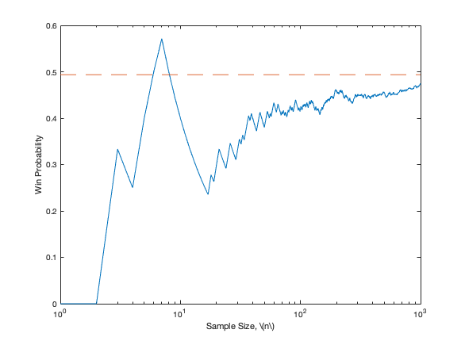

Simulation of the Game of Craps
The game of craps involves the shooter throwing two dice. The payoff depends on the sum of the numbers on the dice. This script simulates the proportion of times that the shooter wins.
On the first roll of the two dice, the shooter
- Automatically wins if the numbers on the dice sum to 7 or 11, and
- Automtically loses if the numbers on the dice sum to 2, 3, or 12.
If the first roll of the two dice results in a sum of 4, 5, 6, 8, 9, or 10, then the shooter rolls again and again until either
- the sum is the same number as the first roll, in which case the shooter wins , or
- the sum is a 7, in which case the shooter loses.
Contents
function CrapsSimulation
Random variable generator giving wins and losses
To perform the simulation we must create a function that produces nRounds of independent and identically distributed (IID) instances of the game of craps. The function craps is defined at the end of this file.
By providing an input to the function craps, we get an IID vector of wins (ones) or losses (zeros)
wins = craps(8)
wins = 8×1 logical array 1 1 0 1 1 0 1 0
And if we do it again, we get a different (random) output:
wins = craps(8)
wins = 8×1 logical array 0 0 0 0 1 0 0 0
Computing the probability of a win by the shooter
The probability of a win is approximately the sample proportion (sample mean) of wins over a large number rounds. For example
tic, probWin = mean(craps(100)), toc tic, probWin = mean(craps(100)), toc
probWin =
0.4800
Elapsed time is 0.020592 seconds.
probWin =
0.5500
Elapsed time is 0.001243 seconds.
Note that the proportion is close to 0.5, but with such a small sample, how can we know how accurate our answer is? We will see later that the error using nRounds for our sample proportion is about \(1/\sqrt{\texttt{nRounds}}\). Thus, using nRounds = 1e6 should give an error of about 0.001.
tic, probWin = mean(craps(1e6)), toc tic, probWin = mean(craps(1e6)), toc
probWin =
0.4924
Elapsed time is 8.485663 seconds.
probWin =
0.4937
Elapsed time is 9.135228 seconds.
With a win probability of about 0.493, this game slightly favors the house.
Monte Carlo answers do not converge montonically
Suppose that we successively increase the number of observations by one and look how the sample mean approaches the true mean
tic nSample = 1000; crapsResults = craps(nSample); probWinVec = cumsum(crapsResults)./(1:nSample)'; semilogx((1:nSample)',probWinVec,[1 nSample],[probWin probWin],'--') xlabel('Sample Size, \(n\)') ylabel('Win Probability') toc
Elapsed time is 0.434025 seconds.
As the plot shows, the approximations oscillate around the true answer, but the oscillations decrease in size as the sample size increases.
Craps function that provides nRounds of IID wins/losses
function wins = craps(nRounds) wins(nRounds,1) = false; %initialize a logical vector of size nRounds for i = 1:nRounds %generate a logical vector of wins/losses firstRoll = sum(ceil(6*rand(1,2))); %sum of two dice, each uniformly having 1 through 6 if any(firstRoll == [7 11]) %automatic win wins(i) = true; elseif any(firstRoll == [2 3 12]) %automatic loss wins(i) = false; else %firstRoll is a 4, 5, 6, 8, 9, or 10 while true %keep rolling until win or lose nextRoll = sum(ceil(6*rand(1,2))); %try to repeat firstRoll if nextRoll == firstRoll %shooter wins wins(i) = true; break %round is over elseif nextRoll == 7 %shooter loses wins(i) = false; break %round is over end %otherwise roll again end end %the ith round is over end %nRounds rounds are over end %end of craps function definition
end %end of CrapsSimulation function definition
Warning: Error updating Text. String scalar or character vector must have valid interpreter syntax: Sample Size, \(n\)
Author: Fred J. Hickernell